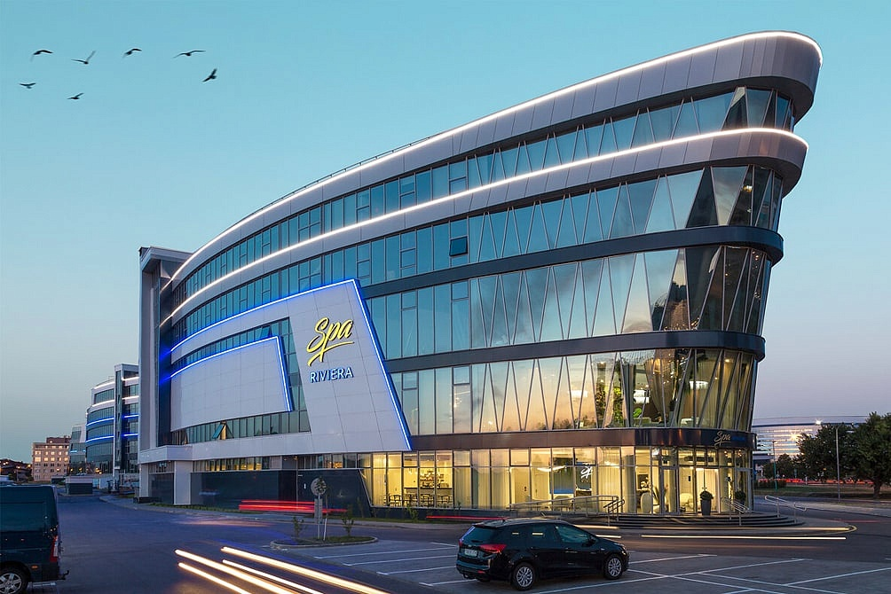
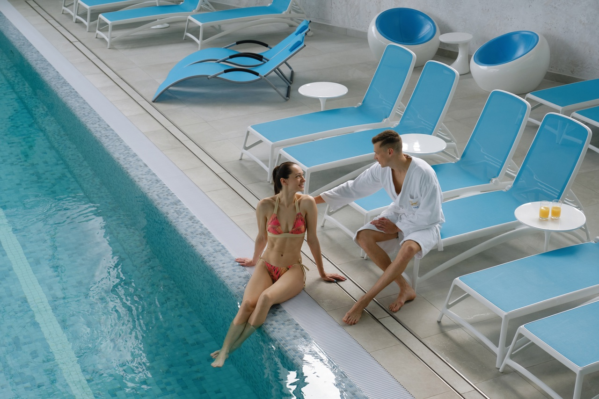
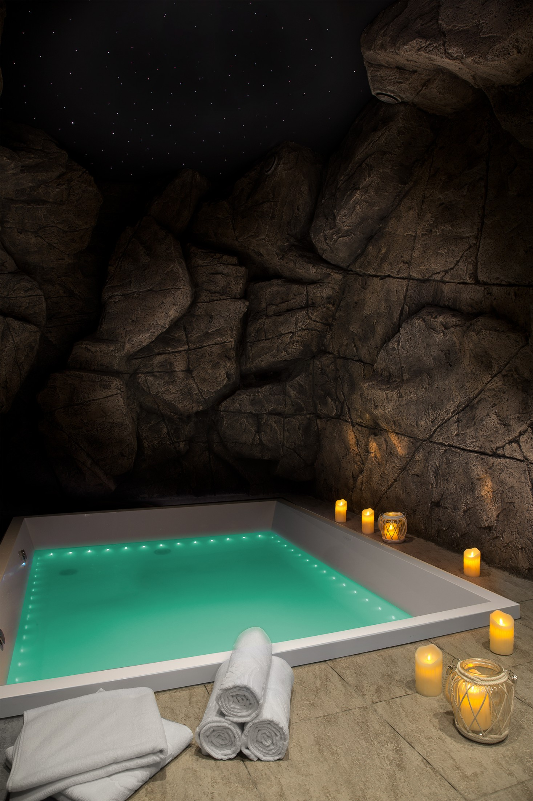
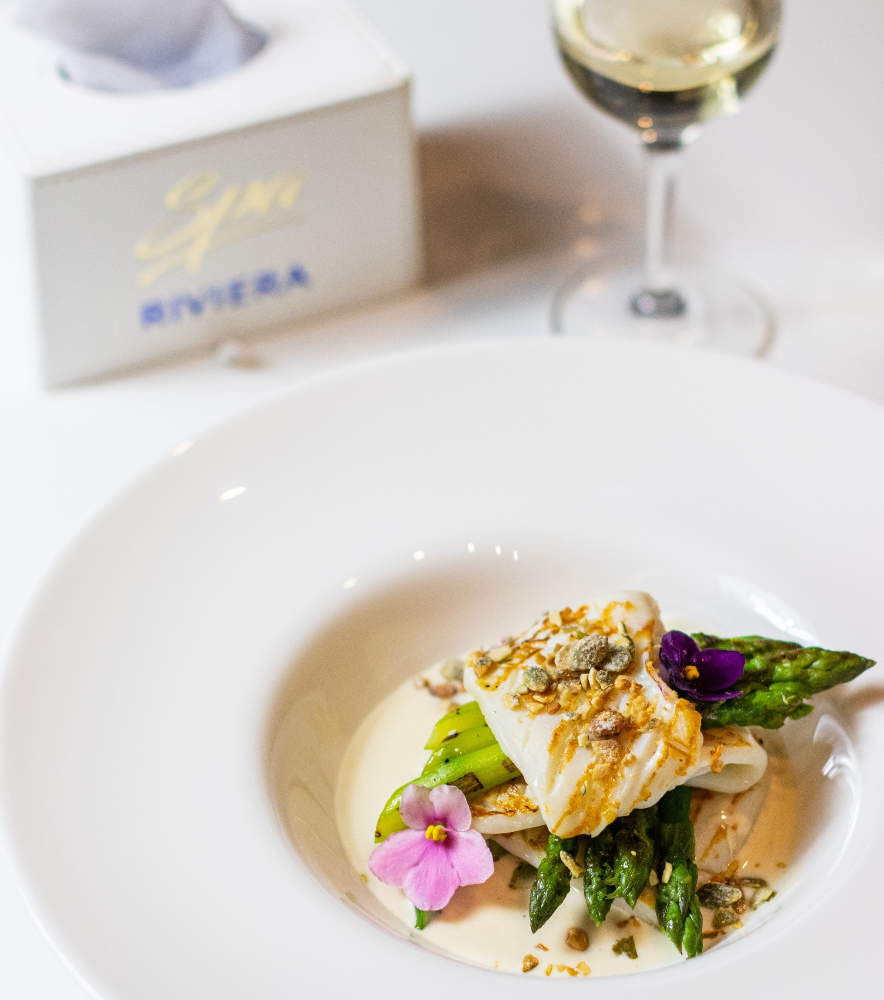
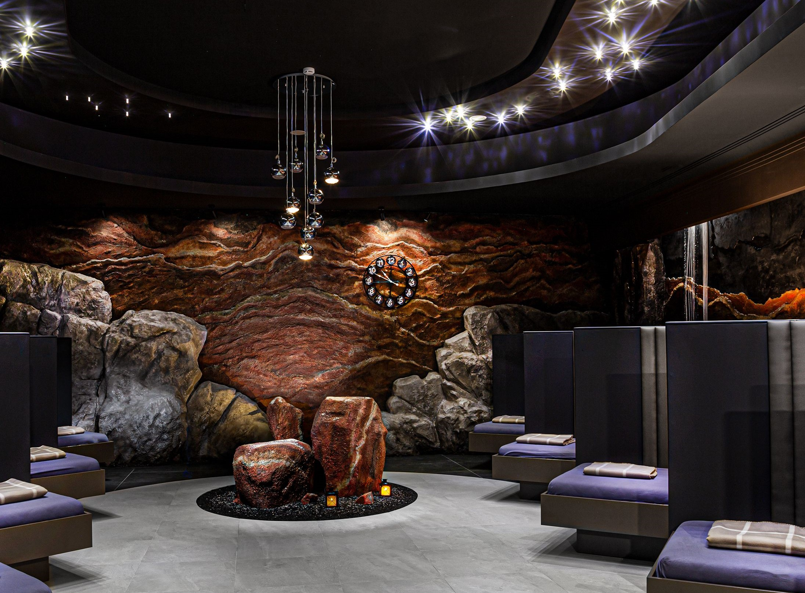

Spa Riviera
Spa Riviera - уникальное пространство для встречи с собой. Один из самых масштабных spa-комплексов в Европе площадью более 6 000 м2.Объединил под своей крышей лучшие SPA-направления всего мира.
SPA Riviera – это больше, чем просто спа. Это целый спа-лайнер, который в поисках сокровищ со всего мира делает остановки в необычных странах или даже целых эпохах.
Приготовьтесь! Вас ждет одно из самых разнообразных, насыщенных и комфортных спа-путешествий. Комплекс объединяет спа направления практически со всего мира и предлагает более 100 спа-уходов, программ, ритуалов и авторских парений, а также совершенно уникальные услуги, такие, как Комната сна, Пивная баня, флоатинг.
Акватермальный комплекс
SPA Riviera – это уникальный банный комплекс, в котором представлены разнообразные бани и сауны, их в нашем спа-центре 17 видов, кроме бань и саун вы найдете 14 купелей и джакузи, грот впечатлений, и даже снежную комнату! Хорошим отдыхом для пары может стать ВИП-сауна с джакузи для двоих в Минске, где вы и ваша вторая половинка сможете расслабиться и провести время с пользой для здоровья. Посещение нашего аква-термального комплекса не оставит равнодушными тех, кто является фанатом парилок и бассейнов, а также массажа и различных водных развлечений. В специальной водной зоне вы найдете бассейн площадью 272 кв. метра с гидромассажными установками, минеральную купель, ледяную купель, бары с напитками и закусками, а также джакузи на балконе, которое работает круглый год. Вы также можете приобрести подарок для своих близких: сертификат на посещение комплекса в течение целого дня.
Флоатинг
Флоатинг – уникальный терапевтический способ достижения глубокой релаксации в флоат-комнате Флоат-комната стилизована под пещеру, для антуража сеанс проходит в темноте: над головой лишь звездное небо, тишину разбавляют успокаивающие звуки природы. Вы погружаетесь в купель, наполненную водой с раствором английской соли (cодержание магния в ней больше, чем в Мертвом море)
Эффект:
- помогает достичь состояния глубинной релаксации;
- расслабляет мышцы;
- освобождает от головных болей, снимает стресс;
- способствует улучшению сна;
SPA-ресторан и бар
Переступив порог нашего комплекса, вы попадете в мир абсолютной гармонии, в котором все, от красивых деталей интерьера до авторского меню шеф-повара подобрано для вашего удовольствия
В комплексе SPA Riviera вы можете насладиться утонченным меню от нашего шеф-повара. На 3 этаже комплекса уютно расположился SPA-ресторан. Авторское меню, используем экологически чистые продукты и необычные вкусовые сочетания.
Pool-бар второго этажа - возможность устроить приятный перерыв, не покидая комплекс.
Комната сна
Комната сна – атмосферная комната для релаксации, погружения в сон, аудиомедитации. Вы располагаетесь в индивидуальной спальной ячейке, где каждая деталь создана для ощущения комфорта. Спальное место оборудовано ортопедическим матрасом и подушкой, прикроватным столиком, наушниками с музыкой, светильником и бра. Посещение без ограничений по времени (до момента 1 выхода из Комнаты сна). По завершении сеанса, предупредите администратора на ресепшн 3 этажа, о том, что вы покидаете Комнату сна.
Эффект от посещения:
- Повышение эмоциональной устойчивости, способности к концентрации.
- Снятие тревоги и усталости.
- Мышечное расслабление.